Ознакомление с инструментами поиска файлов и фильтрации текстовых
данных. Приобретение практических навыков: по управлению процессами, по
проверке использования диска и обслуживанию файловых систем.
Выполнение лабораторной
работы
Запишем
в файл file.txt названия файлов, содержащихся в каталоге /etc. Допишем в
этот же файл названия файлов, содержащихся в нашем домашнем
каталоге.
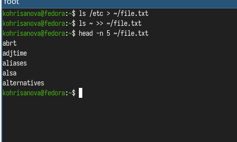
Запись в файл
Выведем
имена всех файлов из file.txt, имеющих расширение .conf, после чего
запишем их в новый текстовой файл conf.txt.
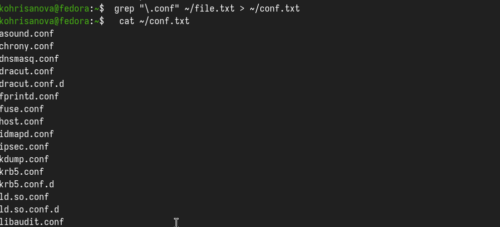
Поиск расширения .conf
Определили,
какие файлы в нашем домашнем каталоге имеют имена, начинавшиеся с
символа c?
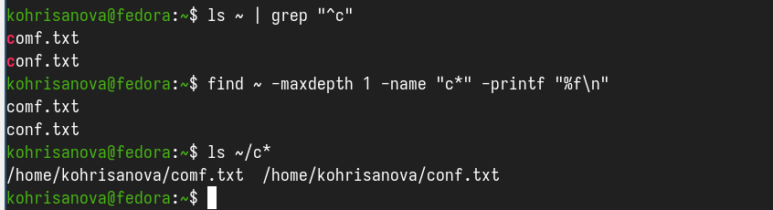
Поиск файлов
Выведем
на экран (постранично) имена файлов из каталога /etc, начинающиеся с
символа h.
find /etc -name "h*" -print | less
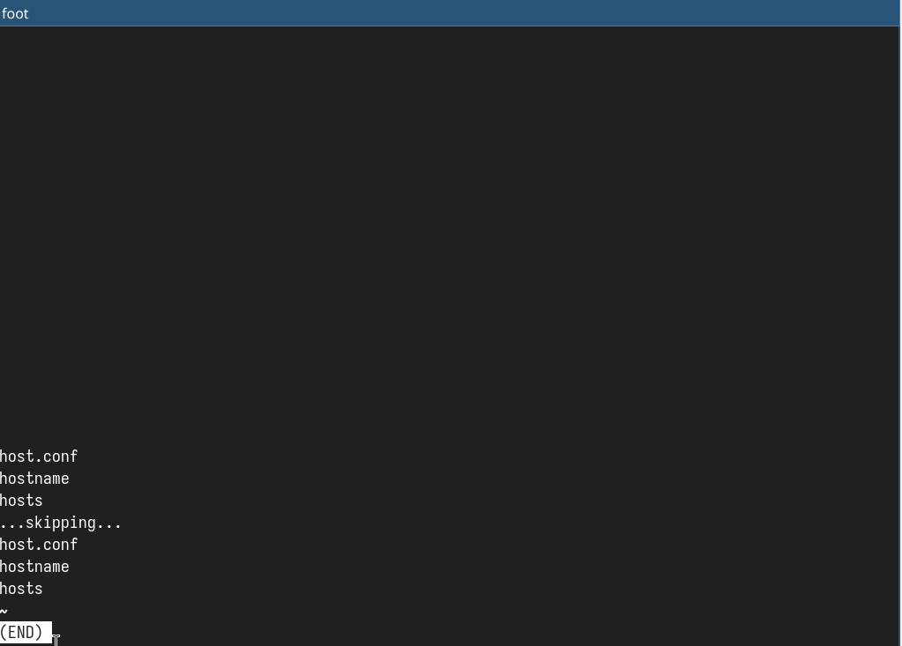
Поиск файлов
Запустили
в фоновом режиме процесс, который будет записывать в файл ~/logfile
файлы, имена которых начинаются с log.
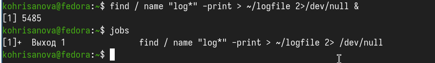
Фоновый запуск процесса
удалили
файл ~/logfile. Но сначала убили процесс в нем.
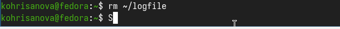
удаление файла
Запустили
из консоли в фоновом режиме редактор gedit.
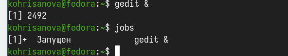
Фоновый запуск и завершение
процесса
Определили
идентификатор процесса gedit, используя команду ps, конвейер и фильтр
grep
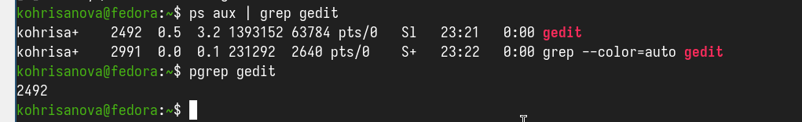
Определили идентификатор процесса
gedit
Прочитали справку (man)
команды kill
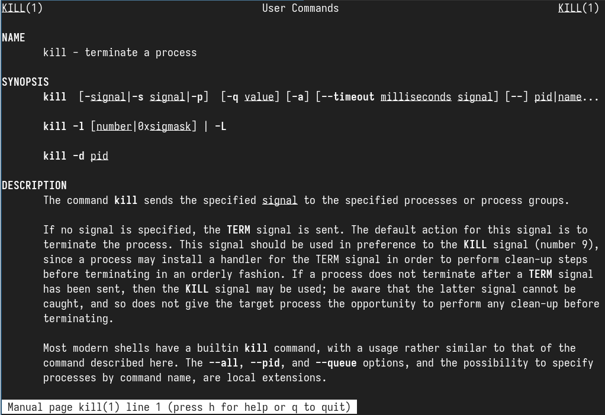
справка команды kill
После
чего использовали её для завершения процесса gedit.
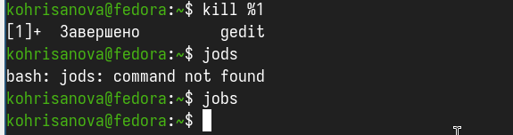
завершение процесса
Выполним
команды df и du, предварительно получив более подробную информацию об
этих командах, с помощью команды man.
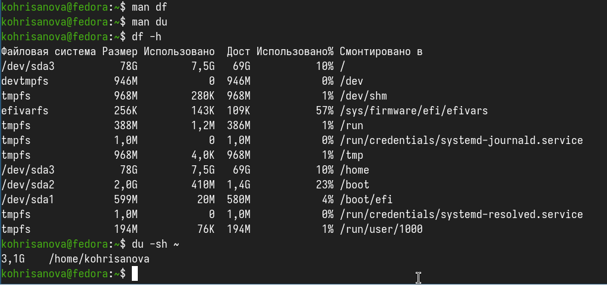
просмотр справок команды и получение
подробной информации
Вывод
В данной работе мы ознакомились с инструментами поиска файлов и
фильтрации текстовых данных. А также приобрели практические навыки по
управлению процессами.